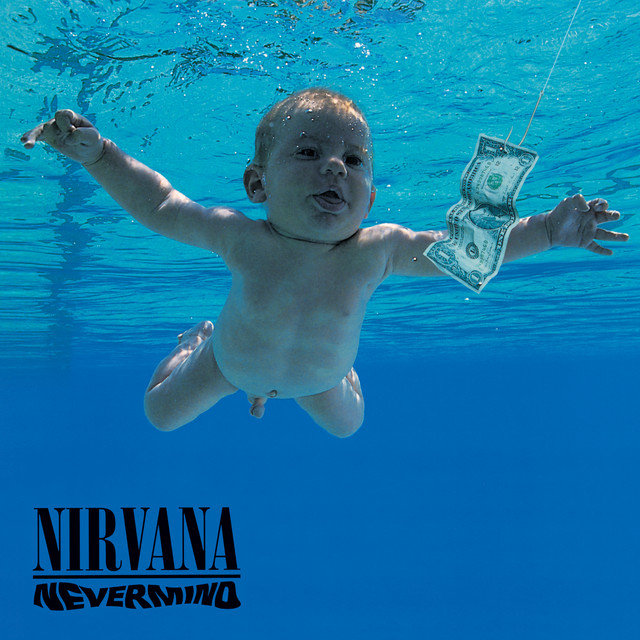

Bleach
15 czerwca 1989

Nevermind
24 września 1991
Incesticide
12 grudnia 1992
In Utero
21 września 1993
MTV Unplugged in New York
1 listopada 1994

Singles
1 marca 1996
From the Muddy Banks of the Wishkah
1 października 1996
Nirvana
29 października 2002
With the Lights Out
23 listopada 2004
Sliver: The Best of the Box
1 listopada 2005